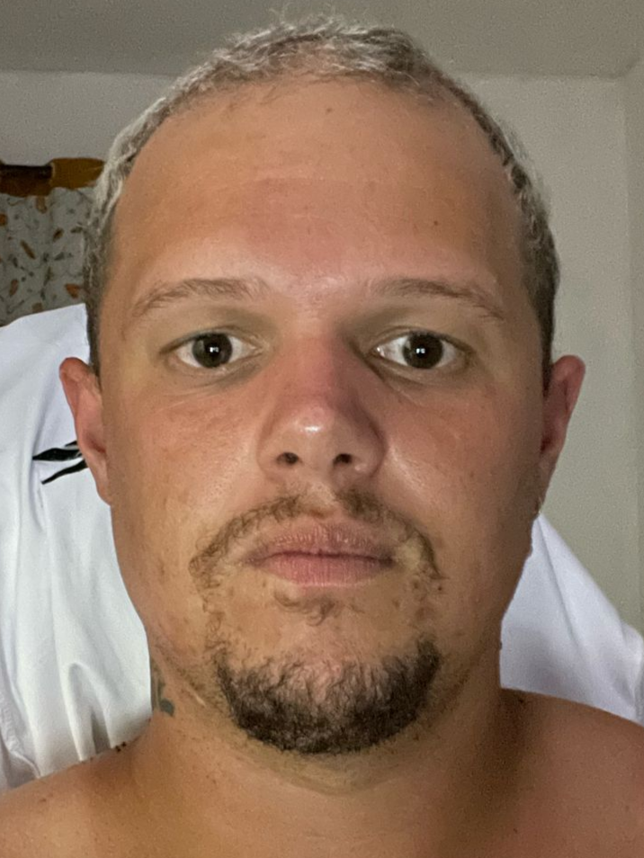

Derick Fabricio Cicero Wogel

- Data Nascimento:19/10/1994
- Idade: 29 anos
- Celular: (24) 992894968
- Email:derickwogel@gmail.com
- Habilitação: Categoria B
- Ed: Rua Jorge Correa Machado 77,Madruga,Vassouras-Rj
OBEJETIVO
- Fazer parte da equipe de funcionários da empresa tendo objetivo de crescer profissionalmente e de maneira produtiva, contribuindo assim para o sucesso da empresa.
EXEPERIÊNCIA
- Deposito Vassourense (Caixa e Repositor)2011/2014 Vassouras-rj
- D.A.A Guedes Pizzaria (Pizzaiolo)2014/2015 Rio das Ostras-Rj
- CPP Msterial de Construção (Serviço Gerais)2015/2016 Vassouras-Rj
- Cuidador de Idoso 2016/2019 Vassouras-Rj
- Contatto Consultoria (Roçador) 2019/2022 Vassouras-Rj
- Prefeitura Municipal de Vassouras (Administrativo) 2022/2024 Vassouras-
FORMAÇÃO
- Ensino Médio: Completo
- Ensino Superior: Cursando-Engenharia de Sotfware
CURSOS COMPLEMENTARES
- Informática Básica: Completo (Vn Cursos) Vassouras-Rj
- Informatica Avançada:Completo (Vn Cursos) Vassouras-Rj
- Técnico Informatica: Completo (Senai) Vassouras-Rj
- Técnicas Conservações de Alimentos (D.A.A Guedes Pizzaria) Rio das Ostras-Rj
- Inglês Basíco: Completo (Faetec) Vassouras-Rj